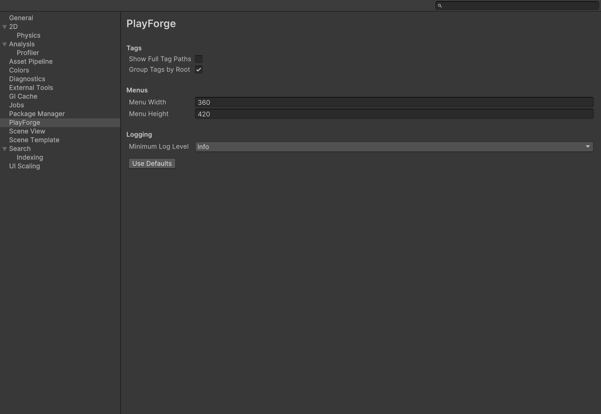

Preferences → PlayForge
Preferences → PlayForge holds each user's own preferences, kept in EditorPrefs.

Preferences → PlayForge.
Tag preferences
The Tags group sets how tag fields and the tag picker show tags.
| Property | Description |
|---|---|
| Show Full Tag Paths | Shows a tag's whole path in strong text, in place of its parents in secondary text before its leaf. Off to start. |
| Group Tags by Root | Groups the tag picker's tags under their root. On to start. |
Menu preferences
The Menus group sets the most a PlayForge dropdown grows to, a picker's or a field's menu. A longer list scrolls.
| Property | Description |
|---|---|
| Menu Width | 360 to start, from 220 to 1200. |
| Menu Height | 420 to start, from 160 to 1600. |
Logging preferences
The Logging group sets how much PlayForge logs.
| Property | Description |
|---|---|
| Minimum Log Level | The quietest message PlayForge logs. Info to start. |
| Level | Logs |
|---|---|
| Verbose | Every trace. |
| Info | Notable events. |
| Warning, Error | Problems alone. |
| None | Nothing. |
Use Defaults
Use Defaults puts every preference back, the tables' column widths and hidden columns and the log level among them.
PlayForgePreferences holds the preferences, and its UseDefaults() does what Use Defaults does.